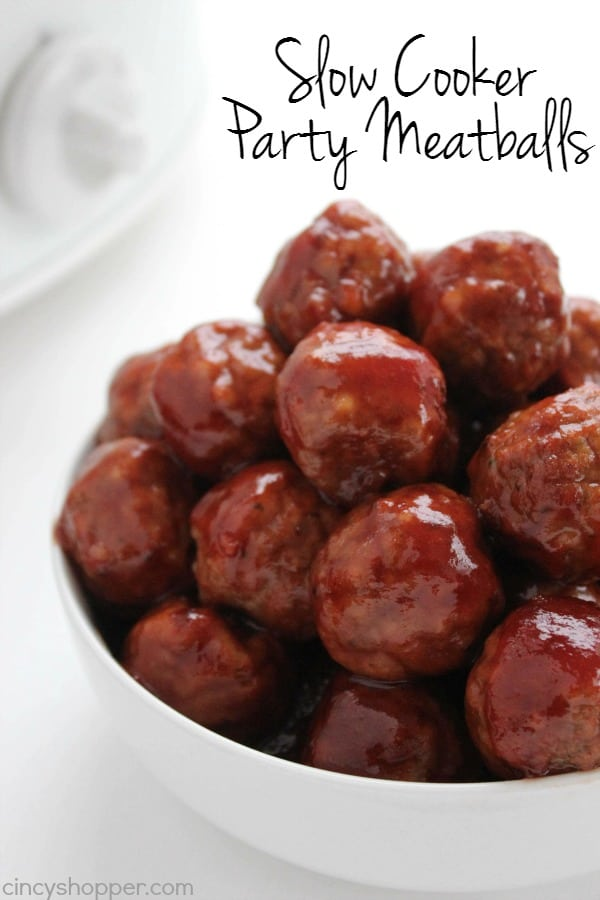

Crock Pot Party Meatballs

Description
A recipe by fabeveryday
Shamelessly stolen from allrecipes.com.
Ingredients
- 1 (2 pound) bag frozen cooked meatballs
- 1 (14.5 ounce) can whole berry cranberry sauce
- 1 (12 ounce) bottle tomato-based chili sauce
- ½ lemon, juiced
- 2 drops hot sauce (such as Tabasco®), or more to taste
Steps
- Place frozen meatballs into a slow cooker. Add cranberry sauce, chili sauce, lemon juice, and hot sauce. Stir to distribute sauce evenly over meatballs.
- Cook on High until meatballs are completely thawed and hot, about 3 hours.
Home